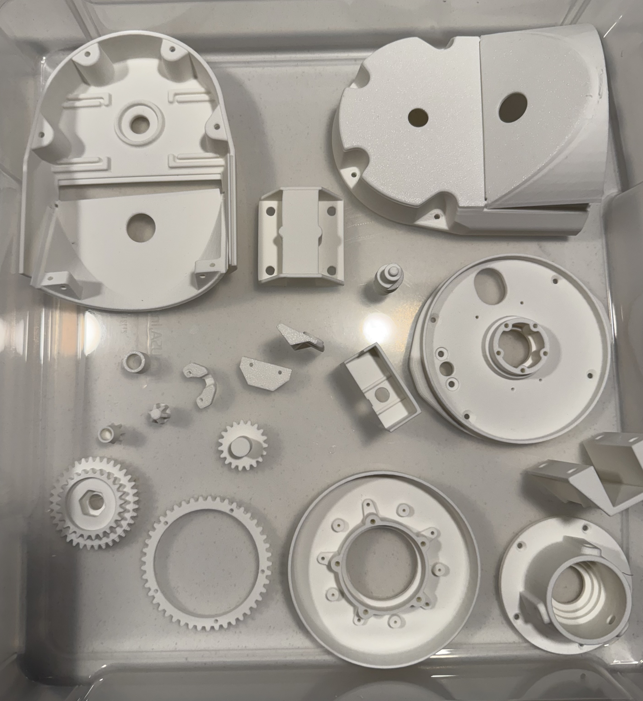

Wouldn’t it be awesome to pull telemetery and images from the downlink of a satellite orbiting the Earth?
Thought so too! So I got started learning about Yagi antennas and UHF FM. And with line of sight we should be able to point this at one and potentially get something. I grabbed one on ebay that broke down instead of making my own, but they look pretty simple
I don’t want pointing the antenna to be a problem I have to deal with so let’s get a tracking rig. Something I can just feed a azimuth and elevation. The antenna is light, so we could get away with 3d printed parts assuming I can find anything..
Enter Satran! – a completed open source project doing everything we want.
Looks like a kit that they once sold, but they provide all the 3d model files, BOMs, PCBs, everything you need to make your own. And other cool folks put together vendor spreadsheets to source the parts online
Here is my progress w/ the 3d printed parts, the only thing I can do right now. Next steps? Ordered the PCBs, aluminum pieces, and electronic components. I should have everything in 2-3 weeks. 🤞🤞🤞🤞
The files print perfectly, matte white w/ a Bambulabs P1P.
MK3 print files (.rar) from https://satran.danaco.se/downloads/
